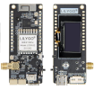

Bench notes
Mesh product reviews
LoRa antennas, amplifiers, and nodes, written from hands-on use while developing Blackout Comms firmware. Findings from the Squarespace review posts are listed here by product so they can be expanded in place.

These are the products covered on the previous site. Individual writeups were short category pages rather than scored reviews. Add a paragraph under any name as you retest it. Nothing here is a sponsored ranking.
Build notes and current hardware recommendations also live on chatters.io/hardware.
Communicators and nodes
Rokland T-Deck CompleteHandheld communicator used as a Blackout Comms host.
LilyGO T-Deck PlusKeyboard handheld. A common flash target for the firmware.
LilyGO LoRa PagerSmall pager-style communicator.
LilyGO T-Beam SupremeNode-class board with GNSS.
LilyGO T-Beam 1WHigher-power T-Beam variant.
LilyGO T3S3 E-PaperLow-draw node with an e-paper display.
Heltec Vision Master E290Heltec LoRa board reviewed alongside LilyGO nodes.
Heltec v4 WiFi LoRa 32 expansion kitWi-Fi plus LoRa development kit.
RAK Unify solar enclosureOutdoor enclosure option for a solar node.
Antennas
Signal Plus 15 inch LoRa antennaFixed antenna used in range checks.
LoRa phased array antennaDirectional option for a longer single hop.
MakerNova 915 flexible LoRa antennaFlexible 915 MHz antenna for portable builds.
Amplifiers
Sunhans LoRa amplifier, 1 wattSmall external amp. Stay inside the rules for the band you are on.
Air Buddy IoT 868/915, 1 wattAnother 1 watt class amp used in testing.
Szhuashi LoRa amplifier, 20 wattsHigh power. Legal limits on ISM LoRa are far below this. Treat it as lab equipment, not a default build.